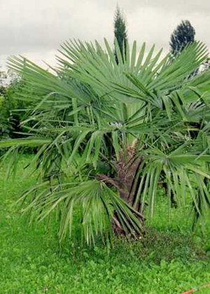

This plant originates from China.People who have bought this plant in the past have experienced temperatures down to minus 18c and it didn't damage the plant. It grows quickly once it is planted. It is best to keep in doors from seed to the 3rd or 4th year for a chance with this plant. As you can see in the photo the truck is hairy and the leaves can grow up to 4ft across. Alkaline soil type is best but grows well in most soils. |
 Trachycarpus Fortunei £12.95 |
Cordyline Australis Red Star £18.00 |
An improved Red form of the Cordyline that needs little introduction, tolerating about minus 8c without protection. If planted in more severe conditions it would require some protection, otherwise the growing point would be killed by the frost. However, even cut down to the ground you could expect new suckering growth the following year to compensate for any top growth loss. Many people leave the old leaves on the trunk to provide additional protection, or tie up the crown leaves during the worst weather conditions. This form has attractive purple red foliage but is not so hardy as the green. |
The “Blue Mediterranean Fan Palm” produces wonderful blue leaves otherwise identical to the normal Mediterranean Fan Palm. However it is reputed to be cold hardy to minus 15°C, coming from a mountainous region with severe frosts in the winter. I am quite excited about this one as not only is it attractive and unusual, but potentially hardier for growing outside in the UK. We have some established 3 litre plants available for 2006 |
Humilis Var Cerifera £19.00 |
See contact details to order by phone. Or you can fill in the order form here online. All major credit cards accepted.